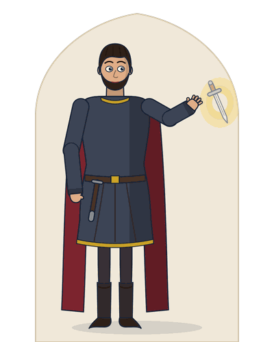

Free sample unit · Macbeth study guide: Act 2, Scenes 1 and 2: the dagger soliloquy and the murder of Duncan
This is Unit 5 of the Macbeth study guide, complete and free to read online: Act 2, Scenes 1 and 2, with a plain modern English line under every line and word notes, then Macbeth’s dagger soliloquy in a model critical note, three short answers, a model context answer and five objective questions, as the book gives them, with the keys from the end of the book.

Unit 5 · Act 2, Scenes 1 and 2
The Dagger and the Murder of Duncan
Act 2, Scenes 1 and 2 · Macbeth’s castle
After midnight Macbeth sees a dagger in the air. He kills Duncan; his wife returns the daggers he dares not take back.
Unit 5 · Act 2, Scenes 1 and 2 (64 and 74 lines) · A murder off stage · Essays 1, 3, 4, 7, 10, 12
Macbeth, drawn for this book from the play.
- Macbeth sees “A dagger of the mind, a false creation” (2.1.38).
- After the murder he cannot pray: “‘Amen’ / Stuck in my throat” (2.2.32-33).
- Lady Macbeth smears the grooms with blood, “For it must seem their guilt” (2.2.57).
Examiners ask
- Critically analyse Macbeth’s dagger soliloquy. Answer: Critical note
- How do Macbeth and Lady Macbeth react differently to the murder of Duncan? Answer: Short answer 2
- Explain lines 33 to 39 of Act 2, Scene 1 with reference to the context. Answer: Context answer
A vision leads Macbeth to the deed; the deed murders his sleep.
Context
A murder borrowed from another story. Shakespeare’s Duncan is murdered in his bed. The Cambridge editors, W. G. Clark and W. A. Wright, later edited Macbeth on its own (Clarendon Press, 1869). There they point out that the details of this murder are borrowed from a different crime in Holinshed’s Chronicles: the murder of King Duff by Donwald. Shakespeare then hides the deed. It happens off stage, while Lady Macbeth waits and listens (2.2.1-13), and we see only the bloody hands and daggers afterwards. So the play shows us not the killing, but what it does to the killers.
The text: Act 2, Scenes 1 and 2 with modern English
Both scenes complete, as the book prints them: every line of the Cambridge text with its line number, a plain modern English line beneath it, and word notes after the passage.
Banquo’s unrest and the dagger soliloquy Act 2, Scene 1 · Lines 1 to 64
Inverness. Court of Macbeth’s Castle.
Enter BANQUO, and FLEANCE bearing a torch before him.
Banquo
How goes the night, boy?
How far into the night is it, boy?
Fleance
The moon is down; I have not heard the clock.
The moon has set; I have not heard the clock.
Banquo
And she goes down at twelve.
And it sets at twelve.
Fleance
I take’t, ’tis later, sir.
I think it is later, sir.
Banquo
Hold, take my sword. There’s husbandry in heaven,
Here, take my sword. They are saving money in heaven,
Their candles are all out. Take thee that too.
Their candles are all out. Take that too.
A heavy summons lies like lead upon me,
A heavy call to sleep lies like lead on me,
And yet I would not sleep. Merciful powers,
And yet I do not want to sleep. Merciful powers,
Restrain in me the cursed thoughts that nature
Hold back in me the cursed thoughts that nature
Gives way to in repose!
Gives way to in sleep!
Enter MACBETH, and a Servant with a torch.
Banquo
Give me my sword.
Give me my sword.
Who’s there?
Who is there?
Macbeth
A friend.
A friend.
Banquo
What, sir, not yet at rest? The king’s a-bed:
What, sir, not in bed yet? The king is in bed:
He hath been in unusual pleasure, and
He has been in unusually good spirits, and
Sent forth great largess to your offices:
Sent generous gifts to your servants’ quarters:
This diamond he greets your wife withal,
With this diamond he greets your wife,
By the name of most kind hostess; and shut up
Calling her the kindest hostess; and he has ended the day
In measureless content.
In boundless contentment.
Macbeth
Being unprepared,
Because we were unprepared,
Our will became the servant to defect,
Our goodwill was held back by what we lacked,
Which else should free have wrought.
Which otherwise would have worked freely.
Banquo
All’s well.
All is well.
I dreamt last night of the three weird sisters:
I dreamed last night of the three weird sisters:
To you they have show’d some truth.
To you they have shown some truth.
Macbeth
I think not of them:
I do not think about them:
Yet, when we can entreat an hour to serve,
Yet, when we can find an hour that suits us,
We would spend it in some words upon that business,
We could spend it in a few words about that business,
If you would grant the time.
If you would give me the time.
Banquo
At your kind’st leisure.
Whenever it suits you best.
Words5 candles: the stars
Macbeth
If you shall cleave to my consent, when ’tis
If you will side with me, when the time comes,
It shall make honour for you.
It shall bring you honour.
Banquo
So I lose none
As long as I lose none
In seeking to augment it, but still keep
In trying to increase it, but always keep
My bosom franchised and allegiance clear,
My heart free from guilt and my loyalty spotless,
I shall be counsell’d.
I will listen to your advice.
Macbeth
Good repose the while!
Rest well in the meantime!
Banquo
Thanks, sir: the like to you!
Thank you, sir: the same to you!
Exeunt Banquo and Fleance.
Macbeth
Go bid thy mistress, when my drink is ready,
Go and tell your mistress, when my drink is ready,
She strike upon the bell. Get thee to bed.
To strike the bell. Go to bed.
Exit Servant.
Is this a dagger which I see before me,
Is this a dagger that I see before me,
The handle toward my hand? Come, let me clutch thee.
The handle towards my hand? Come, let me grasp you.
I have thee not, and yet I see thee still.
I do not have you, and yet I see you still.
Art thou not, fatal vision, sensible
Are you not, deadly vision, as real
To feeling as to sight? or art thou but
To touch as to sight? Or are you only
A dagger of the mind, a false creation,
A dagger of the mind, a false creation,
Proceeding from the heat-oppressed brain?
Coming from an overheated brain?
I see thee yet, in form as palpable
I see you still, in a shape as solid
As this which now I draw.
As this one which I now draw.
Thou marshall’st me the way that I was going;
You lead me the way that I was going;
And such an instrument I was to use.
And just such a weapon I was going to use.
Mine eyes are made the fools o’ the other senses,
My eyes are made fools of by my other senses,
Or else worth all the rest: I see thee still;
Or else they are worth all the rest: I see you still;
And on thy blade and dudgeon gouts of blood,
And on your blade and handle drops of blood,
Which was not so before. There’s no such thing:
Which were not there before. There is no such thing:
It is the bloody business which informs
It is the bloody business that takes shape
Thus to mine eyes. Now o’er the one half-world
Like this before my eyes. Now over one half of the world
Nature seems dead, and wicked dreams abuse
Nature seems dead, and wicked dreams deceive
The curtain’d sleep; witchcraft celebrates
The sleeper behind his curtains; witchcraft performs
Pale Hecate’s offerings; and wither’d murder,
Its offerings to pale Hecate; and withered murder,
Alarum’d by his sentinel, the wolf,
Called to action by his sentry, the wolf,
Whose howl’s his watch, thus with his stealthy pace,
Whose howl is his watchword, like this, with his stealthy pace,
With Tarquin’s ravishing strides, towards his design
With the strides of Tarquin going to rape, towards his goal
Moves like a ghost. Thou sure and firm-set earth,
Moves like a ghost. You sure and firmly set earth,
Hear not my steps, which way they walk, for fear
Do not hear my steps, or which way they walk, for fear
Thy very stones prate of my whereabout,
Your very stones chatter about where I am,
And take the present horror from the time,
And take away the present horror from this hour,
Which now suits with it. Whiles I threat, he lives:
Which suits it so well now. While I make threats, he lives:
Words to the heat of deeds too cold breath gives.
Words give too cold a breath to the heat of deeds.
A bell rings.
I go, and it is done: the bell invites me.
I go, and it is done: the bell invites me.
Hear it not, Duncan, for it is a knell
Do not hear it, Duncan, for it is a death bell
That summons thee to heaven, or to hell.
That calls you to heaven, or to hell.
Exit.
Words25 cleave to my consent: Macbeth’s words are deliberately vague · 52 Hecate: goddess of witchcraft and the moon · 55 Tarquin: Roman prince who raped Lucrece at night
The murder and the knocking Act 2, Scene 2 · Lines 1 to 74
The same.
Enter LADY MACBETH.
Lady Macbeth
That which hath made them drunk hath made me bold;
What has made them drunk has made me bold;
What hath quench’d them hath given me fire. Hark! Peace!
What has put out their fire has given me fire. Listen! Quiet!
It was the owl that shriek’d, the fatal bellman,
It was the owl that shrieked, the deadly bellman,
Which gives the stern’st good-night. He is about it:
Who gives the grimmest goodnight. He is doing it now:
The doors are open, and the surfeited grooms
The doors are open, and the over-full servants
Do mock their charge with snores: I have drugg’d their possets,
Make a mockery of their duty with snores: I have drugged their bedtime drinks,
That death and nature do contend about them,
So that death and life are fighting over them,
Whether they live or die.
Whether they live or die.
Macbeth
Within
Who’s there? what, ho!
Who is there? You there!
Lady Macbeth
Alack, I am afraid they have awaked
Oh no, I am afraid they have woken up
And ’tis not done: the attempt and not the deed
And it is not done: the attempt, and not the deed,
Confounds us. Hark! I laid their daggers ready;
Ruins us. Listen! I laid their daggers ready;
He could not miss ’em. Had he not resembled
He could not miss them. If he had not looked like
My father as he slept, I had done ’t.
My father as he slept, I would have done it.
Enter MACBETH.
Lady Macbeth
My husband!
My husband!
Macbeth
I have done the deed. Didst thou not hear a noise?
I have done the deed. Did you not hear a noise?
Words3 fatal bellman: man ringing a bell before an execution
Lady Macbeth
I heard the owl scream and the crickets cry.
I heard the owl scream and the crickets cry.
Did not you speak?
Did you not speak?
Macbeth
When?
When?
Lady Macbeth
Now.
Now.
Macbeth
As I descended?
As I came down?
Lady Macbeth
Ay.
Yes.
Macbeth
Hark!
Listen!
Who lies i’ the second chamber?
Who is sleeping in the second bedroom?
Lady Macbeth
Donalbain.
Donalbain.
Macbeth
Looking on his hands.
This is a sorry sight.
This is a miserable sight.
Lady Macbeth
A foolish thought, to say a sorry sight.
A foolish thought, to say a miserable sight.
Macbeth
There’s one did laugh in’s sleep, and one cried ‘Murder!’
One of them laughed in his sleep, and one cried ‘Murder!’
That they did wake each other: I stood and heard them:
So that they woke each other: I stood and listened to them:
But they did say their prayers, and address’d them
But they said their prayers, and settled themselves
Again to sleep.
Back to sleep.
Lady Macbeth
There are two lodged together.
There are two sleeping in the same room.
Macbeth
One cried ‘God bless us!’ and ‘Amen’ the other,
One cried ‘God bless us!’ and the other ‘Amen’,
As they had seen me with these hangman’s hands:
As if they had seen me with these executioner’s hands:
Listening their fear, I could not say ‘Amen,’
Listening to their fear, I could not say ‘Amen’
When they did say ‘God bless us!’
When they said ‘God bless us!’
Lady Macbeth
Consider it not so deeply.
Do not think about it so deeply.
Macbeth
But wherefore could not I pronounce ‘Amen’?
But why could I not say ‘Amen’?
I had most need of blessing, and ‘Amen’
I had most need of a blessing, and ‘Amen’
Stuck in my throat.
Stuck in my throat.
Lady Macbeth
These deeds must not be thought
These deeds must not be thought about
After these ways; so, it will make us mad.
In these ways; if they are, it will drive us mad.
Macbeth
Methought I heard a voice cry ‘Sleep no more!
I thought I heard a voice cry, ‘Sleep no more!
Macbeth does murder sleep’—the innocent sleep,
Macbeth is murdering sleep’—the innocent sleep,
Sleep that knits up the ravell’d sleave of care,
Sleep that knits up the tangled thread of worry,
The death of each day’s life, sore labour’s bath,
The death of each day’s life, the bath after painful work,
Balm of hurt minds, great nature’s second course,
Healing ointment for hurt minds, great nature’s main course,
Chief nourisher in life’s feast,—
The chief food at life’s feast—
Lady Macbeth
What do you mean?
What do you mean?
Macbeth
Still it cried ‘Sleep no more!’ to all the house:
It kept crying ‘Sleep no more!’ to the whole house:
‘Glamis hath murder’d sleep, and therefore Cawdor
‘Glamis has murdered sleep, and therefore Cawdor
Shall sleep no more: Macbeth shall sleep no more.’
Shall sleep no more: Macbeth shall sleep no more.’
Lady Macbeth
Who was it that thus cried? Why, worthy thane,
Who was it that cried like that? Why, worthy thane,
You do unbend your noble strength, to think
You weaken your noble strength by thinking
So brainsickly of things. Go get some water,
So madly about things. Go and get some water,
And wash this filthy witness from your hand.
And wash this filthy evidence from your hand.
Why did you bring these daggers from the place?
Why did you bring these daggers from the room?
They must lie there: go carry them, and smear
They must lie there: go, take them back, and smear
The sleepy grooms with blood.
The sleeping servants with blood.
Macbeth
I’ll go no more:
I will not go back:
I am afraid to think what I have done;
I am afraid to think what I have done;
Look on ’t again I dare not.
I dare not look at it again.
Lady Macbeth
Infirm of purpose!
Weak-willed!
Give me the daggers: the sleeping and the dead
Give me the daggers: the sleeping and the dead
Are but as pictures: ’tis the eye of childhood
Are only like pictures: it is the eye of childhood
That fears a painted devil. If he do bleed,
That fears a painted devil. If he is bleeding,
I’ll gild the faces of the grooms withal,
I will paint the servants’ faces with it,
For it must seem their guilt.
For it must look like their guilt.
Exit. Knocking within.
Macbeth
Whence is that knocking?
Where is that knocking coming from?
How is’t with me, when every noise appals me?
What is wrong with me, when every noise terrifies me?
What hands are here? ha! they pluck out mine eyes!
What hands are these? Ha! They pull out my eyes!
Will all great Neptune’s ocean wash this blood
Will all great Neptune’s ocean wash this blood
Clean from my hand? No; this my hand will rather
Clean from my hand? No, this hand of mine will rather
The multitudinous seas incarnadine,
Turn the countless seas blood-red,
Making the green one red.
Making the green sea all red.
Re-enter LADY MACBETH.
Words56 gild: cover with gold; pun on gilt and guilt · 60 Neptune: Roman god of the sea
Lady Macbeth
My hands are of your colour, but I shame
My hands are the same colour as yours, but I would be ashamed
Knocking within
To wear a heart so white. I hear a knocking
To have a heart so white. I hear a knocking
At the south entry: retire we to our chamber:
At the south gate: let us go back to our bedroom:
A little water clears us of this deed:
A little water clears us of this deed:
How easy is it then! Your constancy
How easy it is, then! Your firmness
Knocking within
Hath left you unattended. Hark! more knocking:
Has deserted you. Listen! More knocking:
Get on your nightgown, lest occasion call us
Put on your dressing gown, in case events call for us
And show us to be watchers: be not lost
And show that we have stayed awake: do not be lost
So poorly in your thoughts.
So weakly in your thoughts.
Macbeth
To know my deed, ’twere best not know myself.
To know what I have done, it would be best not to know myself.
Knocking within.
Wake Duncan with thy knocking! I would thou couldst!
Wake Duncan with your knocking! I wish you could!
Exeunt.
Words65 white: pale with fear; cowardly
Critical note: Macbeth’s dagger soliloquy
Critically analyse Macbeth’s dagger soliloquy.
Critical note · about 300 words
Answer. Macbeth’s dagger soliloquy (2.1.33-64) shows a divided mind: his imagination sees the horror of the deed clearly, yet his will carries him towards it. A soliloquy is a speech in which a character, alone on stage or unheard by others, speaks his or her thoughts aloud.
It opens with a vision: “Is this a dagger which I see before me, / The handle toward my hand?” (2.1.33-34). Is it a sign from outside, or “A dagger of the mind, a false creation” (2.1.38)? The play never decides, and no stage direction shows a dagger. The dagger also guides him: “Thou marshall’st me the way that I was going” (2.1.42). It leads him only where he has already chosen to go.
The vision grows worse. Drops of blood appear “on thy blade and dudgeon” (2.1.46), the blade and the handle. He admits: “It is the bloody business which informs / Thus to mine eyes” (2.1.48-49). The murder in his mind is shaping what he sees. A. C. Bradley, in Shakespearean Tragedy (Macmillan, 1904), says that Macbeth “has, within certain limits, the imagination of a poet”.
The speech then turns to the dark world. “Nature seems dead” (2.1.50), and murder “Moves like a ghost” (2.1.56). Macbeth begs the earth, “Hear not my steps” (2.1.57). Darkness and silence wrap the crime.
Last, thought gives way to action. Macbeth knows that talk cools his purpose: “Words to the heat of deeds too cold breath gives” (2.1.61). A bell rings, and he goes. The closing couplet, a pair of rhyming lines, tolls for Duncan like a funeral bell: “it is a knell / That summons thee to heaven, or to hell” (2.1.63-64).
Verdict: the soliloquy shows Macbeth choosing murder with open eyes; his imagination warns him, but his will no longer listens.
316 words
Short answers
What does Act 2, Scene 1 show about the character of Banquo?
5 marks · short answer
Answer. The scene shows Banquo as a good man who feels the pull of temptation and resists it. After midnight he is tired, yet he will not sleep. He prays to be kept from “the cursed thoughts that nature / Gives way to in repose” (2.1.8-9). He admits that he has dreamt of the Witches. When Macbeth hints at a reward for his support, Banquo answers with care. He will accept honour only if he keeps “My bosom franchised and allegiance clear” (2.1.28): his heart free of guilt, and his loyalty to the King untouched. So Banquo acts as a foil to Macbeth, a character who shows up another by contrast. Both men heard the same prophecies, predictions of the future, but only Macbeth acts on them.
129 words
How do Macbeth and Lady Macbeth react differently to the murder of Duncan?
5 marks · short answer
Answer. Macbeth is overcome by guilt and fear, while Lady Macbeth stays calm and practical. Macbeth stares at his bloody hands and says that he could not say Amen. He has carried off the daggers and will not take them back: “I am afraid to think what I have done” (2.2.51). Lady Macbeth takes control: she calls him weak, takes the daggers back and smears the grooms with blood (2.2.52-57). Their words about blood show the gap between them. He feels the whole ocean could not wash his hand clean; she says, “A little water clears us of this deed” (2.2.67). Yet her calm has a crack: Duncan asleep looked too like her father for her to kill him (2.2.12-13). In the sleepwalking scene, her own hands will not come clean (5.1.39).
141 words
Common mistake
The mistake. Quoting the line as “Is this a dagger I see before me?”, or placing the dagger after the murder.
The correction. The text reads “Is this a dagger which I see before me” (2.1.33). Macbeth sees it alone, before the murder, and goes to Duncan only when “the bell invites me” (2.1.62).
Why it costs marks. Examiners mark down a misquoted or misplaced passage.
What is the significance of the voice that cries “Macbeth does murder sleep” (2.2.36)?
5 marks · short answer
Answer. The voice tells Macbeth that his punishment will fit his crime: he has killed a sleeping man, so he will lose sleep himself. In this play, sleep stands for peace of mind and innocence. Macbeth praises it in a list of images. Sleep “knits up the ravell’d sleave of care” (2.2.37): it mends worry as a needle mends tangled thread. It heals hurt minds like a soothing ointment (2.2.39). Then the voice names all his titles: “Glamis hath murder’d sleep, and therefore Cawdor / Shall sleep no more: Macbeth shall sleep no more” (2.2.42-43). The Witches’ honours now carry a curse. Soon Macbeth suffers terrible dreams every night (3.2.18-19), and Lady Macbeth will walk in her sleep. Lost sleep becomes the play’s sign of a guilty mind.
134 words
Context answer
Act 2, Scene 1, lines 33 to 39
Is this a dagger which I see before me,
The handle toward my hand? Come, let me clutch thee.
I have thee not, and yet I see thee still.
Art thou not, fatal vision, sensible
To feeling as to sight? or art thou but
A dagger of the mind, a false creation,
Proceeding from the heat-oppressed brain? (2.1.33-39)
Reference to context · 200 to 250 words
Answer.
Reference. These lines open the dagger soliloquy in Act 2, Scene 1 of Macbeth by William Shakespeare. A soliloquy is a speech in which a character, alone on stage or unheard by others, speaks his or her thoughts aloud. Macbeth speaks after midnight, in his castle at Inverness.
Context. Banquo has just gone to bed, troubled by dreams of “the three weird sisters” (2.1.20). Macbeth has told his servant to have Lady Macbeth “strike upon the bell” (2.1.32). When it rings, at the end of the speech, he goes to kill Duncan.
Explanation. Macbeth sees a dagger hanging in the air, its handle turned towards him as if offered. He tries to grasp it, but his hand closes on nothing. He asks whether this “fatal vision” (2.1.36), deadly and fateful, can be felt as well as seen. Or is it a false picture made by a fevered brain? Speaking to the dagger as if it could hear is apostrophe: speech addressed to an absent person or a thing. The balanced line “I have thee not, and yet I see thee still” (2.1.35) sets having against seeing.
Critical comment. The passage leaves open whether the dagger is supernatural or imagined. Either way, it shows that Macbeth’s mind has already committed the murder. At the banquet Lady Macbeth will mock “the air-drawn dagger” (3.4.62).
232 words
Objective questions
Choose one answer. The keys, from the end of the book, follow the questions.
21. Macbeth tells his servant that Lady Macbeth should strike the bell:
(a) when his drink is ready
(b) when Duncan is asleep
(c) when Banquo has gone to bed
(d) when the grooms are drunk
22. Match the speaker with the line:
A. “The moon is down; I have not heard the clock” (2.1.2)
B. “I dreamt last night of the three weird sisters” (2.1.20)
C. “Will all great Neptune’s ocean wash this blood” (2.2.60)
D. “A little water clears us of this deed” (2.2.67)
Speakers:
1. Lady Macbeth
2. Fleance
3. Macbeth
4. Banquo
(a) A-4, B-2, C-3, D-1
(b) A-2, B-4, C-1, D-3
(c) A-2, B-4, C-3, D-1
(d) A-4, B-2, C-1, D-3
23. Put these events in the order they happen:
I. Macbeth sees a dagger in the air
II. Banquo hands Macbeth Duncan’s diamond for Lady Macbeth
III. A bell rings
IV. Lady Macbeth takes the daggers back
(a) I, II, III, IV
(b) II, I, III, IV
(c) II, III, I, IV
(d) I, III, II, IV
24. Statement I: Lady Macbeth says she would have killed Duncan had he not looked like her father.
Statement II: Macbeth leaves the daggers in Duncan’s chamber beside the grooms.
(a) Both statements are correct
(b) Both statements are incorrect
(c) Statement I is correct, Statement II is incorrect
(d) Statement I is incorrect, Statement II is correct
25. In “The multitudinous seas incarnadine” (2.2.62), “incarnadine” means:
(a) wash clean
(b) make calm
(c) make cold
(d) turn red
Keys
21. (a) when his drink is ready. “Go bid thy mistress, when my drink is ready, / She strike upon the bell” (2.1.31-32).
22. (c) A-2, B-4, C-3, D-1. Fleance answers his father (2.1.2), Banquo recalls his dream (2.1.20), Macbeth sees his hands (2.2.60) and Lady Macbeth replies (2.2.67).
23. (b) II, I, III, IV. The diamond (2.1.15), the dagger (2.1.33), the bell (stage direction after 2.1.61), then “Give me the daggers” (2.2.53).
24. (c) Statement I is correct, Statement II is incorrect. “Had he not resembled / My father as he slept, I had done ’t” (2.2.12-13); Macbeth brought the daggers (2.2.48).
25. (d) turn red. The next line explains it: “Making the green one red” (2.2.63).
This was Unit 5 of Macbeth: Exam Edition
The full book has 13 units like this one, 12 model essays, 105 objective questions and a bank of 40 key passages. The free PDF sample has this unit as it appears in the book, with the title page, A Note from the Author and the contents.